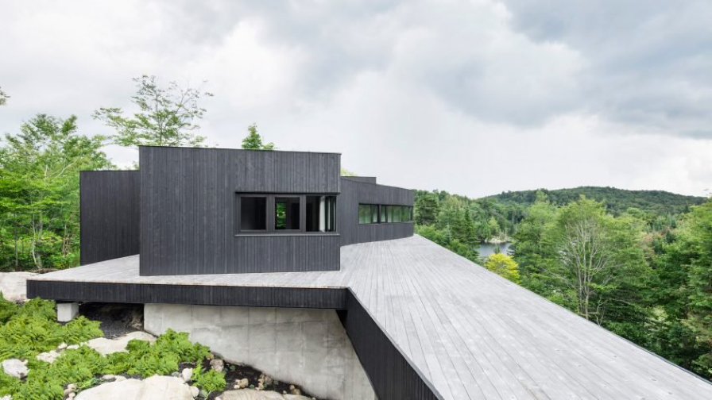
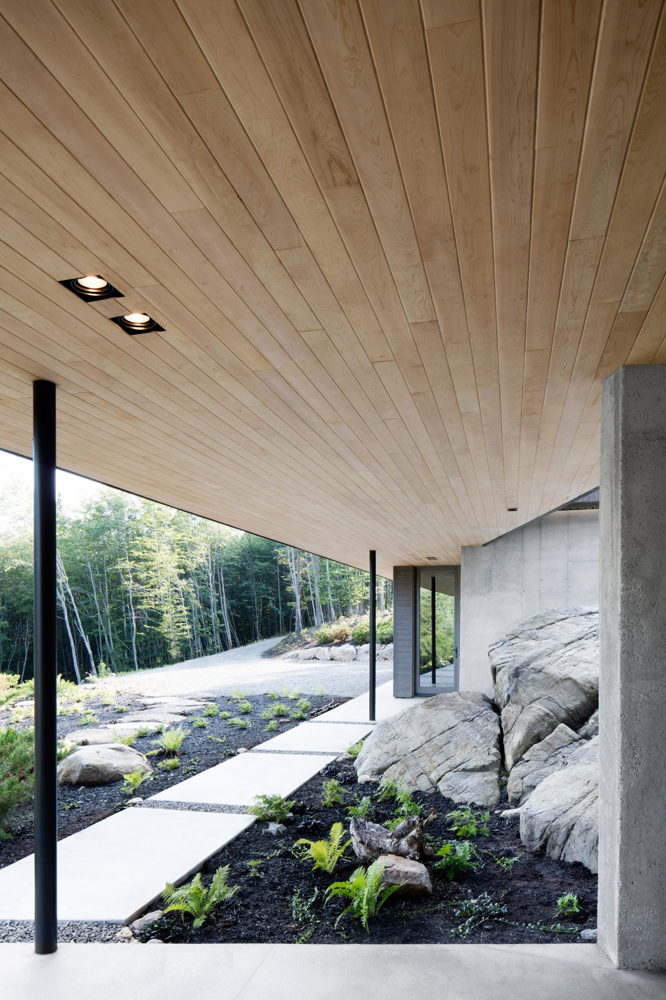

Bridget Cogley | 17 September 2017
5 comments
Expansive deck divides levels of Canadian cliffside house by Alain Carle
Canadian firm Alain Carle Architecte has built a sustainable house in the mountains of Quebec as a retreat from modern conveniences. La Héronnière by Alain Carle Located in the Laurentian Mountains, La Héronnière sits atop large rocks overlooking a forest. The clients chose the site based on the natural surroundings.

Polished concrete floors, black accessories, and other cool-toned furnishings decorate the interior. To add warmth, ceilings are clad in a blonde wood and a large carpet covers the floors. Stairs off the kitchen lead to a below-grade nook with a high-top eating and work table running along a glazed wall. A green house, office, storage unit and audio-recording room are also located in the lower section.

On top, the black-clad structure accommodates a den, master suite, guest bedroom and bathroom, with a separate biomass system to the west with a solar-powered roof. Underneath, an open-plan living room and kitchen are divided by a dining table. "The house has been designed to be able to function almost completely autonomously," said studio founder Alain Carle.
A large part of the home's energy comes from photovoltaic panels. Neighbouring pines protect the house from wind. "Exempt from a magnetic field or wireless devices, the house reflects the owners' desire to occupy a harmonious and 'symbiotic' way where the site is perceived as the 'host'," Carle said.